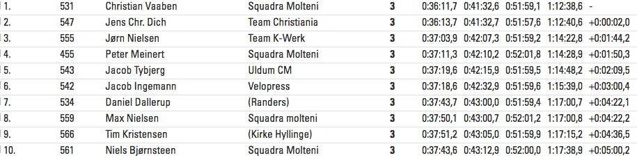

Retro Fondo 2017 – Flot spurtsejr til Christan Vaaben

Sæsonen blev åbnet med et brag af et lækkert løb, med 34 startende i retroklassen ved Gran Fondo Jennums retroløb: Retro Fondo. Squadra Molteni stillede med 8 mand til start – og holdets nye mand Christian Vaaben kørte en flot sejr hjem.
Der var forår med sol og to-cifrede grader i vejrudsigten – men det var en overskyet og lidt blæsende morgen felterne sod under ved starten lørdag morgen. Størstedelen af carbonrytterne stod i vintercykeljakker, lange cykeltights, termo-skoovertræk og varme handsker.
En stor del havde endda elefanthuer under hjelmene. I retrofeltet var fortolkningen af vejret noget anderledes. Flere havde valgt at stille op i korte cykelbukser og cykeltrøjer, enten med lange ærmer eller løse ærmer. Det er nok også dér erfaring komme ind i billedet:
Hvis du ikke småfryser inden start – så har du for meget tøj på, når du skal køre race.
Og allerede på første omgang brød solen frem – og vejret var til kort – kort.
Udbrud under masteromgangen
Masteromgangen bag den pruttende og meget lugtende Peugeot 205 blev en let rodet affære. Den tunge ende af 60 km-feltet blev tidligt indhentet og skulle overhalet, hvilket bl.a. resulterede i, at en meget tændt Jens Chr. Dich, Team Christiania og Tim Kristensen røg i udbrud foran Masterbilen.
Heldigvis er løbsleder Thure Fuhrmann Kjær en venlig mand, så han nøjedes med at køre de to ryttere ind og give dem en advarsel.
Ellers lykkedes det masterbilen at holde feltet pænt samlet helt frem til 200 meter ude på 2. omgang, hvor løbet blev givet frit.
Sidevind og splittelse
Allerede kort efter at løbet blev givet frit, blev der rykket. Specielt Jørn Nielsen fra Team K-Werk viste som altid aggressiv kørsel. Efter bakken i Søskov og på vej mod Lildfrost stod en frisk vind fra højre – og hurtigt blev feltet knækket.
Her opstod der virkelig kamp om pladserne på viften. Vi havde Christian og Max fint fremme i feltet. Jeg når lige at komme med, helt ude i gruset i venstre side af vejen bag Peter, fortæller Niels Bjørnsteen. Uheldigvis når hverken Grane, Jens, Carsten eller Eigil at komme med.
Angreb
Føregruppen bestod nu af 11 mand: Jens Chr. Dich, Team Christiania, Jørn Nielsen, Team K-Werk, Jacob Thybjerg, Uldum CM, Jacob Ingemann, Velopress, Daniel Dallerup, Randers, Tim Kristensen, Kirke Hyllinge, Morten Mejsen, Peugeot Te-Cycle, Christian Vaaben, Peter Meinert, Max Nielsen og Niels Bjørnsteen, Squadra Molteni.
Kort efter sidevindsstykkerne rykker Jens Chr. Dich. I føregruppen er der enighed om, at han skulle have lov til at stege alene lidt. Men Jørn Nielsen er utålmodig, og rykker kort tid efter Jens. Jørn når dog aldrig op, og må opgive.
Jens ser stærk ud og har nu fået et pænt hul. Squadra Molteni må tage ansvar. Christian Vaaben sendes afsted. Christian kommer legende let op til Jens – og de to sejler afsted.
Maaløe vs Marker
Længere nede i hovedfeltet udspilles der små kampe – bl.a. en revanchematch mellem rivalerne Grane Maaløe, Squadra Molteni og stjerneroulleure Thomas Marker, Velopress.
Det var tydeligt at se, at Thomas Marker har doseret sin træning efter en afskrift fra Finn Birks plan til Grane. Vi ved ikke hvordan planen bliver lækket, men vi arbejder på sagen, udtaler Kasper Sørensen, holdets løjtnant og sikkerhedsansvarlige på en fax fra den italienske højdetræningslejr.
Som en fortsættelse af sidste års kamp ned af Munkebjerg, hvor Thomas trak det korteste strå og endte bataljen på en skrænt udenfor autoværnet. ( Der går ubekræftede rygter om brug af Silica-pumpe i et forhjul, men vi betragter det som en alternativ sandhed fra det københavnske retro-miljø).
Så forsatte deres kamp igen denne lørdag. Der blev skubbet og hugget aggressivt og i rent selvforsvar lykkedes det Grane, at skubbe københavneren til venstre ud af højresvinget ved Høgsholt, hvorefter der var fred og ro en tid.
Da cyklen i år ikke blev defekt lykkedes det hr Marker mirakuløst, at komme tilbage i løbet. En racemarchal og et anseeligt kontantbeløb, kan stadig udløse mirakler…, fortæller Grane.
Den glødende rivalisering fortsatte til Jennumbakken, hvor Grane Wunderbein rykkede hårdt på de sidste 50 meter og afgjorde striden til fordel for Squadra Molteni.
Squadra Moltenis hemmelige vaaben
I front blev kampen om sejren udspillet mellem Jens Chr. Dich og Christian Vaaben. Her blev det Jennumbakken, hvor det endelig slag skule udkæmpes. Det blev Christian der var vandt den lange bakkespurt.
I forfølgergruppen, der på sidste omgang blev splittet i to, blev der fuld fortjent Jørn Nielsen i hård kamp mod Peter Meinert, der vandt kampen 3. pladsen.
Fra Squadra Moltenis HQ lyder der en stor ros til hele holdet.
Vi er naturligvis rigtig glade for Christian Vaabens sejr. Det beviser, at de forskudspenge for den kommende nøgenkalender til EuroWoman, som vi brugte på indkøbet af Christian, er givet godt ud, fortæller Niels Bjørnsteen.
Men også også de 100 pakker Rød Orlic og 300 flasker Jägermeister, som vi har købt Max Nielsen for i efteråret, viste sig at være en rigtig god investering. Max kørte et vild flot løb. Han var en stærk og tro hjælper for mig, der var lidt tung i røven på sidste omgang. Jeg er sikker på, at hvis det havde været en flad rute, så var Max kørt med sejren.
Retro Fondo – et godt arrangeret løb. Flot setup, gode start og målomgivelser. Karrysuppen var lækker – der manglede dog kaffe og kage efter løbet. Og mulighed for at købe en mørk øl…
Resultatliste:

Komplet liste her:
http://my1.raceresult.com/61747/results?lang=dk#5_B97044
(Foto: Jesper Halvorsen, GripGrabMediaCrew)